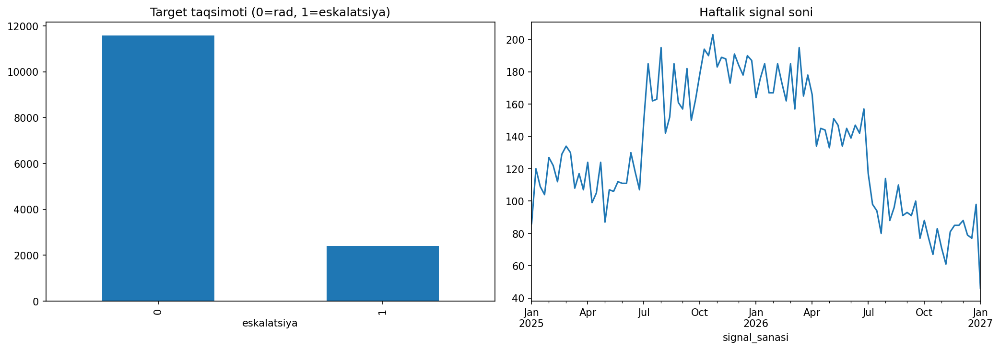
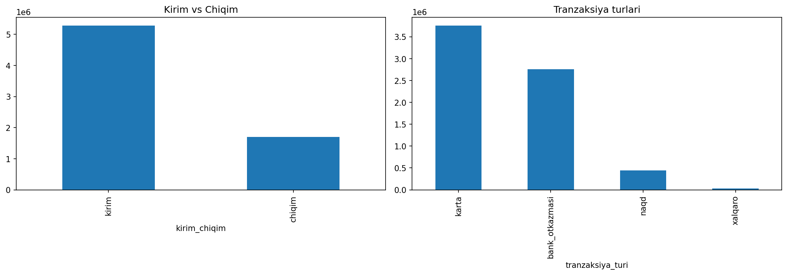
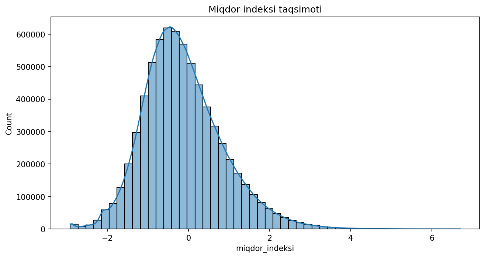
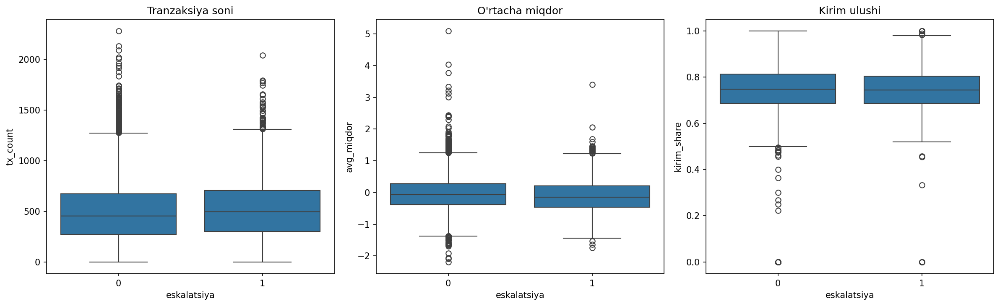

Muammoga yondashuv
O'zbekistondagi moliyaviy monitoring bo'limi mijozlarning tranzaksiya tarixi asosida avtomatik alertlar generatsiya qiladi. Har bir alert mutaxassis tomonidan ko'rib chiqiladi va yo rad etiladi, yo keyingi tekshiruv uchun eskalatsiya qilinadi.
Bizning vazifamiz — har bir alert uchun uning eskalatsiya qilinish ehtimolini bashorat qiluvchi model qurish edi. Buning uchun har bir alert (signal_id) ga tegishli tranzaksiyalar tarixini signal darajasidagi feature'larga aylantirdik (agregatsiya, ulush hisoblash, statistik ko'rsatkichlar) va bir nechta klassifikatsiya modelini solishtirdik.
Dataset tuzilishi
train_signals.csv — bitta qator = bitta alert (signal_id, signal_sanasi, eskalatsiya).
train_transactions.parquet — relatsion jadval: har bir alertga bir nechta tranzaksiya to'g'ri keladi (tranzaksiya_vaqti, kirim_chiqim, tranzaksiya_turi, miqdor_indeksi).
EDA vizualizatsiyalari




Asosiy topilmalar
- Target balanssiz: 82.8% alert rad etilgan, 17.2% eskalatsiya qilingan — model o'qitishda
class_weight='balanced'ishlatildi. - Vaqt bo'yicha trend: haftalik signal soni 2025 o'rtalarida ~150-200 taga ko'tarilib, 2026 o'rtalaridan keskin pasaygan — bu tashqi omillar (masalan monitoring qoidalarining o'zgarishi) bilan bog'liq bo'lishi mumkin.
- Tranzaksiya turlari: karta (54%) va bank o'tkazmasi (39%) eng ko'p uchraydigan turlar, xalqaro tranzaksiyalar atigi 0.5% ni tashkil qiladi, lekin risk nuqtai nazaridan alohida ahamiyatga ega.
- Escalated vs dismissed farqi: guruhlar orasidagi o'rtacha statistik ko'rsatkichlar (tranzaksiya soni, o'rtacha miqdor, kirim ulushi) sezilarli farq qilmadi — bu signal nisbatan "sokin" (kuchli chiziqli ajratuvchi feature yo'q) ekanini bildiradi.
- Vaqt oynali feature'lar (1/7/30 kun) qo'shimcha foyda bermadi — aksincha, model overfit qilib, natijani yomonlashtirdi. Bu — kichik namunada (14,000 alert) ko'p feature qo'shish har doim ham yaxshilanish bermasligini ko'rsatadi.
Feature engineering va modelga ta'siri
Tranzaksiyalar jadvali signal_id darajasiga quyidagi agregatsiyalar orqali aylantirildi:
- Tranzaksiya soni, o'rtacha/maksimal/minimal miqdor indeksi
- Kirim va chiqim ulushlari
- Tranzaksiya turlari bo'yicha ulushlar (karta, bank o'tkazmasi, naqd, xalqaro)
- Oxirgi tranzaksiyadan signal sanasigacha bo'lgan kunlar farqi
Uch model solishtirildi: LightGBM, RandomForest va LogisticRegression. RandomForest eng barqaror natija berdi va yakuniy model sifatida tanlandi.
| Model | CV ROC-AUC |
|---|---|
| LightGBM | 0.562 |
| RandomForest | 0.591 |
| LogisticRegression | 0.564 |
Xulosa
Ushbu vazifada tranzaksiya tarixidan olingan agregatsiyalangan feature'lar bilan alert eskalatsiyasini bashorat qiluvchi model qurdik. 5-fold cross-validation orqali RandomForest (ROC-AUC ≈ 0.59) eng barqaror model sifatida tanlandi. Vaqt oynali qo'shimcha feature'lar sinovdan o'tkazildi, ammo natijani yaxshilamadi — bu kichik hajmdagi datasetda soddaroq, umumlashtiruvchi feature to'plamining afzalligini ko'rsatdi.